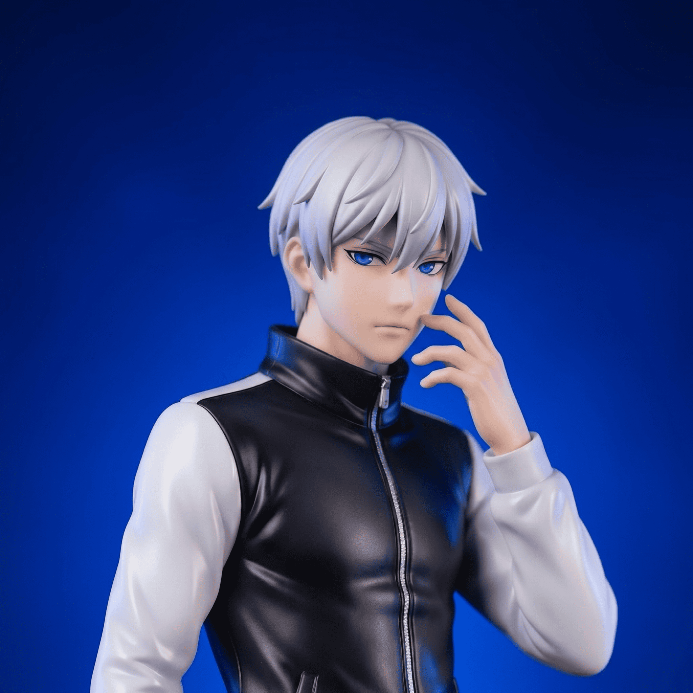

Learn about the passion, mission, and major channel milestones that drove Anime Boy LK from a small review channel to Sri Lanka's primary Otaku brand.
Anime Boy LK started in 2020 as a modest passion project. Initially born out of lockdown boredom and a personal fascination with Japanese anime, I noticed a major gap in the Sri Lankan creator landscape: the lack of comprehensive, high-quality anime reviews in our native language.
What started as recording script reviews with a basic headset microphone soon transformed into a highly-focused brand, gaining support from thousands of passionate local anime fans.
Anime is a global medium with profound narrative depth, psychological nuances, and structural complexity. However, standard review content and detailed lore explanations were almost exclusively available in English or Japanese.
My core purpose is to bridge this gap. I want to explain the intricate philosophy of shows like Death Note, the massive world architecture of One Piece, and the deep themes of modern masterpieces to local viewers in fluent, engaging Sinhala.

Founder & Solo Creator
Hi! I'm Vihaga, nikenamed as "Dekim", the sole creator, writer, narrator, and editor behind Anime Boy LK. My journey with anime started years ago, fueled by an appreciation for Japanese storytelling, intricate plots, and art direction.
Operating as a one-person team means I handle everything: from researching deep lore details and writing engaging scripts to recording voiceovers and editing final video assets. This hands-on process allows me to maintain a consistent, high-quality standard across all reviews and discussions.
To educate, entertain, and inspire Sri Lanka's anime community. We strive to provide objective, honest criticism and detailed lore analyses, raising the local standard of content creation while encouraging thoughtful discussions.
To establish Anime Boy LK as the premier creator hub for Otaku culture in Sri Lanka. We aim to expand local appreciation for anime, manga, and Japanese pop culture by hosting events, collaborations, and community projects.
Comprehensive reviews covering animation standards, story pacing, and soundtrack scores.
Unraveling psychological concepts, moral dilemmas, and subtexts hidden in stories.
Bridging the gap between the animated screen adaptations and the original manga chapters.
Interacting with other local creators to talk about seasonal releases and Otaku events.
Uploaded our first Sinhala review on අනිවාරෙන් බලන්න ඔන anime 05ක් | Sinhala | LK as we started our journey in the world of anime content creation.
Reached milestone of 1,000 subscribers. Expanded our video topics into seasonal guides and podcasts. Built a active discord server and engaged local fan community.
Reached 5,000 subscribers and launched our official blog to share in-depth articles and reviews.
Launched the official creator website to host educational articles, recommendations, and active community discussion forums.
We typically upload 1-2 videos per week. Mostly 1 video per week. We prioritize high-quality editing, research, and voice-overs over quick uploads, so some detailed character analyses might take slightly longer.
Yes, absolutely! We frequently compare anime adaptations with their original manga chapters, discussing deleted scenes, alternate panels, and lore updates.
You can suggest anime reviews and cast votes on upcoming video topics directly through the board on our Community page, or drop suggestions in our active whatsapp channels!
Please be respectful and constructive in your comments. We do not tolerate hate speech, personal attacks, or spam. All comments are moderated to ensure a positive community environment.